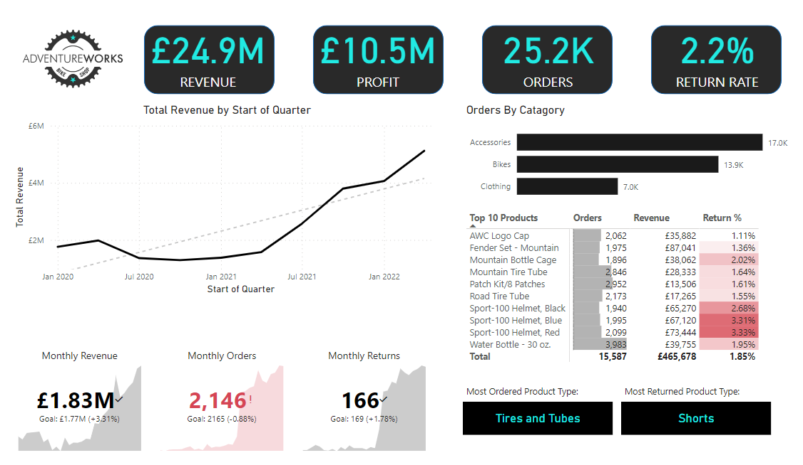
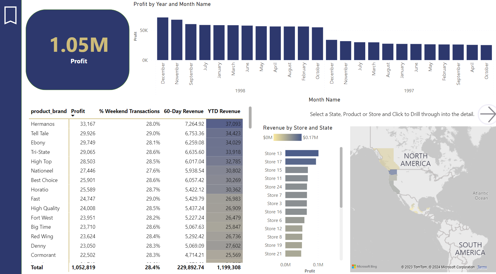

Featured Work
A selection of major implementations highlighting system ownership, architectural design, and direct business value.
Movie Recommendation System
Key Impact
- Improved baseline model performance (loss reduction) by 36%.
- Successfully benchmarked SVD, Regression, SVR, and Neural Network models against each other.
What I Did
Designed and implemented foundational SVD models, scaling up to advanced algorithms including Random Forest and PyTorch neural networks. Engineered features from raw datasets following comprehensive exploratory data analysis.

IMDb NLP Sentiment Analysis
Key Impact
- Achieved an 87% predictive accuracy rate with a custom Convolutional Neural Network (CNN).
What I Did
Extracted extensive datasets using complex Google BigQuery SQL queries. Preprocessed text using Count Vectorization. Engineered a CNN model to automate sentiment classification.

End-to-End Regulatory Reporting Pipeline (RRA System)
Key Impact
- System became a reliable, scalable backbone for reporting, significantly reducing manual intervention.
- Enabled faster turnaround of reporting cycles and increased confidence in submitted data under audit conditions.
What I Did
Took ownership of the end-to-end data pipeline layer orchestration and transformation logic using dbt. Engaged stakeholders, mapped business rules, and handled BAU onboarding. Implemented validation controls to guarantee output integrity and resolve complex data issues swiftly.

Large-Scale Mortgage Portfolio Integration (Flow & Octane)
Key Impact
- Successfully delivered the integration in just 6 weeks, beating the historical 3-month organizational delivery benchmark.
- Significantly reduced onboarding time for acquisitions, improving organizational responsiveness.
What I Did
Led the end-to-end integration by analyzing source structures, mapping schemas, and establishing target transformation logic. Authored dbt models to assure dataset consistency with existing compliance outputs. Hardened the pipeline with requisite automated data reconciliation checks.

Treasury System Integration
Key Impact
- Eliminated manual processes and provided full visibility of treasury statistics.
- Enhanced completeness and verifiable precision of overarching regulatory financial output.
What I Did
Orchestrated treasury data ingestion, mapping, and transformation routines. Implemented extensive dbt transformation models to align with central architectures constraints, ensuring data flows remained strictly auditable against rigid compliance guidelines.

Data Pipeline Optimisation
Key Impact
- Slashed GL import times by 67% (1.5 hours down to 30 minutes).
- Accelerated entire monthly pipeline runtime from 2.5 hours to 1 hour consistently, vastly reducing operational overhead.
What I Did
Audited current pipeline orchestration constraints. Overhauled critical SQL queries and refactored underlying dbt transformation logic. Reconfigured general ledger import operations to ensure smooth reporting cadences.
Credit Card Defaults Application
Key Impact
- Achieved an 82% overall accuracy and 43% recall rate on proactive default identification.
What I Did
Managed data wrangling and preparation, handled classification imbalances, and built an ensemble architecture utilizing Naive Bayes, Logistic Regression, XGBoost, and SVM with extensive hyperparameter tuning.

Revenue Testing & Sampling Automation
Key Impact
- Reduced manual sampling and testing duration from 8 days to just 2 days.
- Implemented targeted sampling logic for high-risk areas, significantly boosting audit precision.
What I Did
Established a robust, repeatable data model using Power Query. Engineered sophisticated DAX measures to drive an automated dynamic reporting application, centralizing disparate data extraction processes.

Dynamic Parameters Interface for Retail Analytics
Key Impact
- Migrated cumbersome manual extraction functions into an automated intuitive visualization interface.
- Accelerated granular decision-making via complex drill-through analysis across stores, regions, and periods.
What I Did
Developed the visualization framework incorporating complex dynamic parameters using DAX variables. Built responsive drill-through routing to empower operational stakeholders.
Domestic Flight Delay Analytics
Key Impact
- Uncovered crucial delay drivers attributing causes to NAS networks, weather events, and specific carriers during peak holiday seasons.
What I Did
Cleaned datasets executing complex table queries through SQL. Programmed visual dashboards representing distributions across operational phases. Constructed baseline predictive components using Python machine learning capabilities.
PyTorch Image Recognition Neural Network
Key Impact
- Trained multi-layer networks capable of accurately classifying 88% of validation imagery.
- Optimized data ingestion functions to maintain efficient batch loading velocities.
What I Did
Led dataset normalizations dictating image resizing parameters. Built, iterated, trained, and monitored various tensor architectures escalating from linear boundaries to full Convolutional Neural Networks (CNNs).
Selenium Web Automation Bot
Key Impact
- Showcased scalable, modular DOM interaction engineering suitable for headless data scraping deployments.
What I Did
Incorporated Selenium WebDriver logic with Python environments manipulating standard browser instances. Transitioned monolithic scripts into robust, encapsulated OOP classes to simulate automated behavior structures.

Azure Trading & Productivity Engineering
Key Impact
- Demolished manual extraction lags, enabling genuine daily dashboard intelligence for partners.
- Exponentially improved visibility around critical KPIs—billings, operational capacity, and pipeline work-in-progress (WIP).
What I Did
Re-engineered legacy requirements generating a dimensional star-schema output. Formulated Azure Data Factory workflows to ingest unstructured operations logs. Enacted automated validation metrics via Python scripts culminating in a secure semantic Power BI layer.